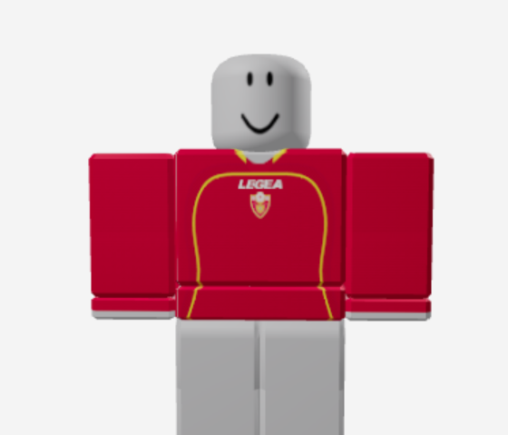
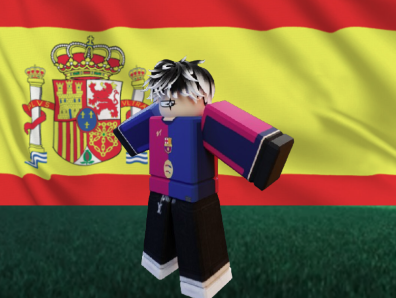

Muntenegru RL1 se pregătește de EURO
3 Iulie 2025
Naționala Muntenegrului din RL1 se pregătește intens pentru EURO. Nu avem fani mulți, dar avem o echipă unită, serioasă și prezentă la fiecare antrenament.
Citește mai mult

Spania vine la EURO cu un lot echilibrat și plin de superstaruri: Apex și Zindy conduc ofensiva!
2 Iulie 2025
Naționala Spaniei se pregătește intens pentru Campionatul European, iar așteptările sunt uriașe.
Citește mai mult

Șoc în fotbalul european: Muntenegru zdrobește Franța cu 7-1 într-un amical de pregătire!
30 iunie 2025
29 iunie 2025 – Fotbalul mondial a fost zguduit de un rezultat absolut neașteptat în meciul amical disputat aseară între Muntenegru și Franța.
Citește mai mult

România în Grupa A alături de Germania! Cine vor fi următoarele două echipe?
27 iunie 2025
Grupa A începe cu emoții mari pentru suporterii tricolori!
Citește mai mult